import pandas as pd
import matplotlib.pyplot as plt
import seaborn as sns
from main import get_data
(root, data_path, presidents, cities, countries, years, colors) = get_data()
timeframe = ('2018-08-01', '2022-07-31')Aggregated Daily Sentiment
def add_day_and_get_daily_sentiment(data):
# Group the data by day and calculate the average 'Compound' value
# convert to datetime
data['created_at'] = pd.to_datetime(data['created_at'])
data['day'] = data['created_at'].dt.date
daily_sentiment = data.groupby('day')['Compound'].mean().reset_index()
return data, daily_sentiment
def get_compound_mean(data):
assert 'Compound' in data.columns
return data['Compound'].mean()mean_compound = pd.read_pickle('results/mean_compound.pkl')def plot_sentiment_with_highlights_and_timeframes(daily_sentiment, title, mean_location=None, num_top_points=10, num_bottom_points=10, timeframe=None, colors=None, average_compound=None, save_path=None):
plt.figure(figsize=(15, 8))
sns.lineplot(x='day', y='Compound', data=daily_sentiment, color=colors[1])
top_points_list = [] # List to store top points
bottom_points_list = [] # List to store bottom points
if num_top_points > 0:
top_points = daily_sentiment.nlargest(num_top_points, 'Compound')
for index, row in top_points.iterrows():
plt.scatter(row['day'], row['Compound'], color=colors[0], s=30, edgecolor='black', zorder=5)
plt.text(row['day'], row['Compound'], f"{row['day']}\n{row['Compound']:.2f}", fontsize=8, va='bottom', ha='right')
top_points_list.append((row['day'], row['Compound']))
if num_bottom_points > 0:
bottom_points = daily_sentiment.nsmallest(num_bottom_points, 'Compound')
for index, row in bottom_points.iterrows():
plt.scatter(row['day'], row['Compound'], color=colors[2], s=30, edgecolor='black', zorder=5)
plt.text(row['day'], row['Compound'], f"{row['day']}\n{row['Compound']:.2f}", fontsize=8, va='bottom', ha='right')
bottom_points_list.append((row['day'], row['Compound']))
if timeframe:
plt.axvspan(pd.to_datetime(timeframe[0]).date(), pd.to_datetime(timeframe[1]).date(), color=colors[0], alpha=0.3)
plt.axhline(0, color='gray', linestyle='--', linewidth=1)
if average_compound:
plt.axhline(average_compound, color='black', linestyle='--', linewidth=2, label=f"Mean Sentiment Score ({average_compound:.2f})")
offset = (daily_sentiment['Compound'].max() - daily_sentiment['Compound'].min()) * 0.02
plt.text(pd.to_datetime(daily_sentiment['day'].max()), average_compound + offset, f' {average_compound:.2f}', verticalalignment='bottom', horizontalalignment='right', color='black', fontsize=10)
if mean_location is not None:
plt.axhline(mean_location, color=colors[0], linestyle='--', linewidth=2, label=f'Mean Location Sentiment Score ({mean_location:.2f}')
offset = (daily_sentiment['Compound'].max() - daily_sentiment['Compound'].min()) * 0.03
plt.text(pd.to_datetime(daily_sentiment['day'].max()), mean_location - offset, f' {mean_location:.2f}', verticalalignment='top', horizontalalignment='right', color=colors[0], fontsize=10)
plt.title(title)
plt.xlabel('Date')
plt.ylabel('Sentiment Score')
sns.despine()
plt.legend()
plt.tight_layout()
plt.ylim(-1, 1)
if save_path:
plt.savefig(save_path, format='png', bbox_inches='tight')
plt.show()
return top_points_list, bottom_points_list
def print_outliers(top_points, bottom_points):
print("Top Points:")
for date, sentiment in top_points:
print(f"Date: {date}, Sentiment: {sentiment:.2f}")
print("\nBottom Points:")
for date, sentiment in bottom_points:
print(f"Date: {date}, Sentiment: {sentiment:.2f}")for president in presidents:
# get sentiment development regardless of location
data = pd.read_pickle(f'{data_path}{president}.pkl')
data, daily_sentiment = add_day_and_get_daily_sentiment(data)
average_compound = get_compound_mean(data)
top_points, bottom_points = plot_sentiment_with_highlights_and_timeframes(daily_sentiment,
title = f'Daily Mean Compound Sentiment Score for {president.capitalize()}',
colors=colors,
average_compound=average_compound,
mean_location=mean_compound.at['All','Total'],
save_path=f'visualizations/compound_sentiment/outliers/{president}.png')
print_outliers(top_points, bottom_points)
# get location-specific sentiment development
for location in (cities + countries):
data = pd.read_pickle(f'{data_path}{president}-{location}.pkl')
data, daily_sentiment = add_day_and_get_daily_sentiment(data)
average_compound = get_compound_mean(data)
top_points, bottom_points = plot_sentiment_with_highlights_and_timeframes(daily_sentiment,
title = f'Daily Mean Compound Sentiment Score for {president.capitalize()} in {location}',
colors=colors,
average_compound=average_compound,
mean_location=mean_compound.at['All',location],
save_path=f'visualizations/compound_sentiment/outliers/{president}-{location}.png')
print_outliers(top_points, bottom_points)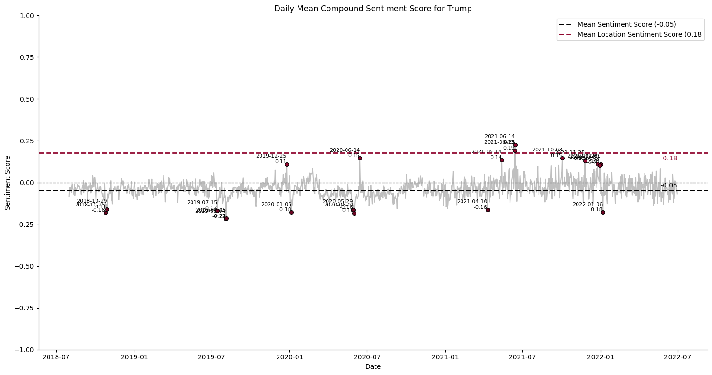
Top Points:
Date: 2021-06-14, Sentiment: 0.23
Date: 2021-06-13, Sentiment: 0.19
Date: 2021-10-03, Sentiment: 0.15
Date: 2020-06-14, Sentiment: 0.15
Date: 2021-05-14, Sentiment: 0.14
Date: 2021-11-25, Sentiment: 0.13
Date: 2021-12-25, Sentiment: 0.11
Date: 2019-12-25, Sentiment: 0.11
Date: 2022-01-01, Sentiment: 0.11
Date: 2021-12-30, Sentiment: 0.10
Bottom Points:
Date: 2019-08-04, Sentiment: -0.22
Date: 2019-08-05, Sentiment: -0.21
Date: 2020-06-01, Sentiment: -0.18
Date: 2018-10-25, Sentiment: -0.18
Date: 2022-01-06, Sentiment: -0.18
Date: 2020-01-05, Sentiment: -0.18
Date: 2019-07-15, Sentiment: -0.17
Date: 2021-04-10, Sentiment: -0.16
Date: 2020-05-29, Sentiment: -0.16
Date: 2018-10-29, Sentiment: -0.16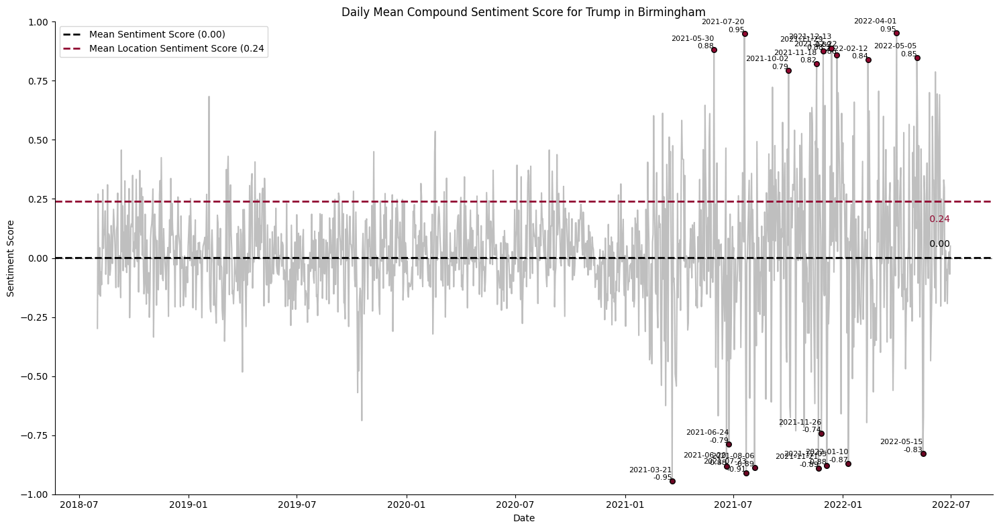
Top Points:
Date: 2022-04-01, Sentiment: 0.95
Date: 2021-07-20, Sentiment: 0.95
Date: 2021-12-13, Sentiment: 0.89
Date: 2021-05-30, Sentiment: 0.88
Date: 2021-11-29, Sentiment: 0.88
Date: 2021-12-22, Sentiment: 0.86
Date: 2022-05-05, Sentiment: 0.85
Date: 2022-02-12, Sentiment: 0.84
Date: 2021-11-18, Sentiment: 0.82
Date: 2021-10-02, Sentiment: 0.79
Bottom Points:
Date: 2021-03-21, Sentiment: -0.95
Date: 2021-07-23, Sentiment: -0.91
Date: 2021-11-21, Sentiment: -0.89
Date: 2021-08-06, Sentiment: -0.89
Date: 2021-06-20, Sentiment: -0.88
Date: 2021-12-05, Sentiment: -0.88
Date: 2022-01-10, Sentiment: -0.87
Date: 2022-05-15, Sentiment: -0.83
Date: 2021-06-24, Sentiment: -0.79
Date: 2021-11-26, Sentiment: -0.74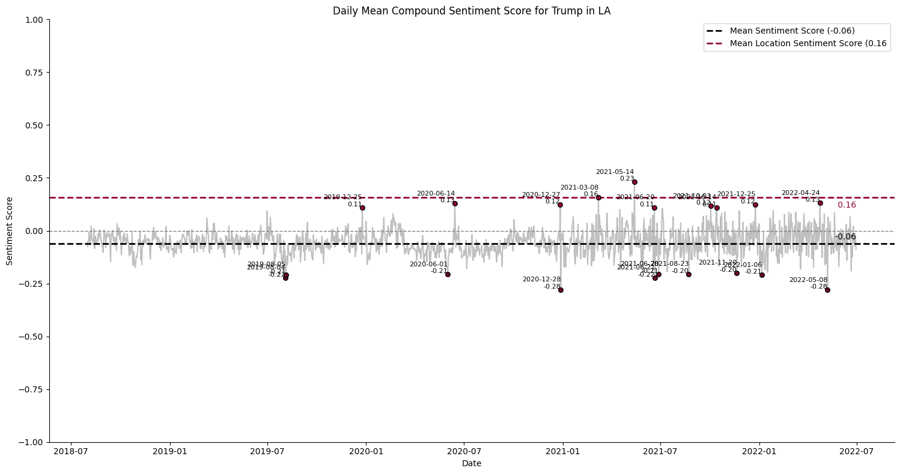
Top Points:
Date: 2021-05-14, Sentiment: 0.23
Date: 2021-03-08, Sentiment: 0.16
Date: 2022-04-24, Sentiment: 0.13
Date: 2020-06-14, Sentiment: 0.13
Date: 2021-12-25, Sentiment: 0.12
Date: 2020-12-27, Sentiment: 0.12
Date: 2021-10-03, Sentiment: 0.12
Date: 2019-12-25, Sentiment: 0.11
Date: 2021-10-14, Sentiment: 0.11
Date: 2021-06-20, Sentiment: 0.11
Bottom Points:
Date: 2022-05-08, Sentiment: -0.28
Date: 2020-12-28, Sentiment: -0.28
Date: 2021-06-21, Sentiment: -0.22
Date: 2019-08-04, Sentiment: -0.22
Date: 2022-01-06, Sentiment: -0.21
Date: 2019-08-05, Sentiment: -0.21
Date: 2020-06-01, Sentiment: -0.21
Date: 2021-06-28, Sentiment: -0.21
Date: 2021-08-23, Sentiment: -0.20
Date: 2021-11-20, Sentiment: -0.20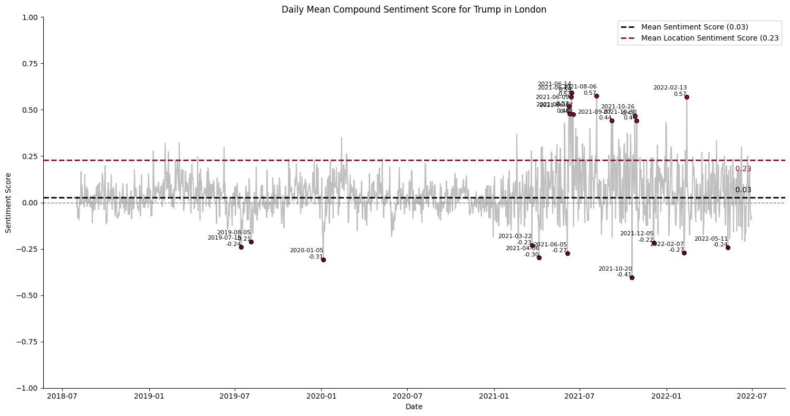
Top Points:
Date: 2021-06-14, Sentiment: 0.59
Date: 2021-08-06, Sentiment: 0.57
Date: 2022-02-13, Sentiment: 0.57
Date: 2021-06-13, Sentiment: 0.57
Date: 2021-06-09, Sentiment: 0.52
Date: 2021-06-10, Sentiment: 0.48
Date: 2021-06-17, Sentiment: 0.48
Date: 2021-10-26, Sentiment: 0.47
Date: 2021-09-07, Sentiment: 0.44
Date: 2021-10-30, Sentiment: 0.44
Bottom Points:
Date: 2021-10-20, Sentiment: -0.41
Date: 2020-01-05, Sentiment: -0.31
Date: 2021-04-06, Sentiment: -0.30
Date: 2021-06-05, Sentiment: -0.27
Date: 2022-02-07, Sentiment: -0.27
Date: 2022-05-11, Sentiment: -0.24
Date: 2019-07-15, Sentiment: -0.24
Date: 2021-03-22, Sentiment: -0.23
Date: 2021-12-05, Sentiment: -0.22
Date: 2019-08-05, Sentiment: -0.21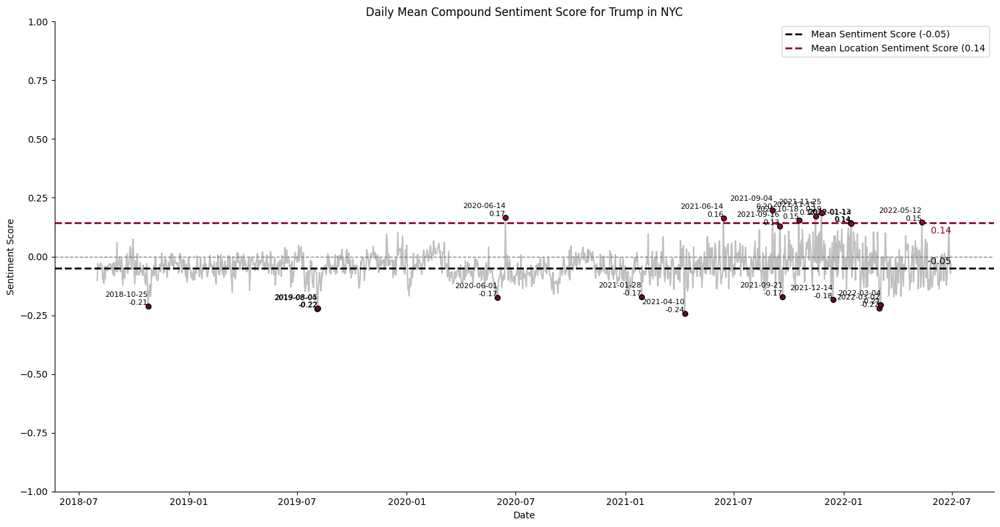
Top Points:
Date: 2021-09-04, Sentiment: 0.20
Date: 2021-11-25, Sentiment: 0.19
Date: 2021-11-15, Sentiment: 0.17
Date: 2020-06-14, Sentiment: 0.17
Date: 2021-06-14, Sentiment: 0.16
Date: 2021-10-18, Sentiment: 0.15
Date: 2022-05-12, Sentiment: 0.15
Date: 2022-01-13, Sentiment: 0.14
Date: 2022-01-14, Sentiment: 0.14
Date: 2021-09-16, Sentiment: 0.13
Bottom Points:
Date: 2021-04-10, Sentiment: -0.24
Date: 2019-08-04, Sentiment: -0.22
Date: 2019-08-05, Sentiment: -0.22
Date: 2022-03-02, Sentiment: -0.22
Date: 2018-10-25, Sentiment: -0.21
Date: 2022-03-04, Sentiment: -0.21
Date: 2021-12-14, Sentiment: -0.18
Date: 2020-06-01, Sentiment: -0.17
Date: 2021-09-21, Sentiment: -0.17
Date: 2021-01-28, Sentiment: -0.17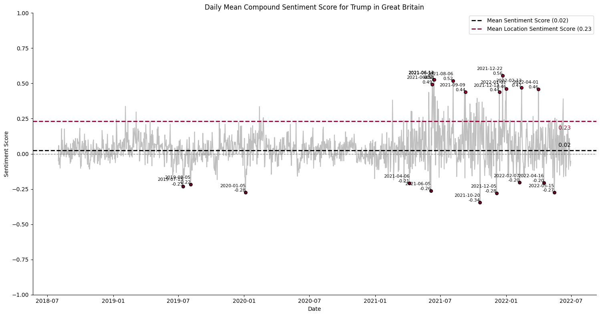
Top Points:
Date: 2021-12-22, Sentiment: 0.56
Date: 2021-06-13, Sentiment: 0.53
Date: 2021-06-14, Sentiment: 0.53
Date: 2021-08-06, Sentiment: 0.52
Date: 2021-06-09, Sentiment: 0.49
Date: 2022-02-13, Sentiment: 0.47
Date: 2022-01-01, Sentiment: 0.46
Date: 2022-04-01, Sentiment: 0.46
Date: 2021-09-09, Sentiment: 0.44
Date: 2021-12-13, Sentiment: 0.44
Bottom Points:
Date: 2021-10-20, Sentiment: -0.34
Date: 2021-12-05, Sentiment: -0.28
Date: 2020-01-05, Sentiment: -0.28
Date: 2022-05-15, Sentiment: -0.27
Date: 2021-06-05, Sentiment: -0.26
Date: 2019-07-15, Sentiment: -0.23
Date: 2019-08-05, Sentiment: -0.22
Date: 2021-04-06, Sentiment: -0.21
Date: 2022-04-16, Sentiment: -0.20
Date: 2022-02-07, Sentiment: -0.20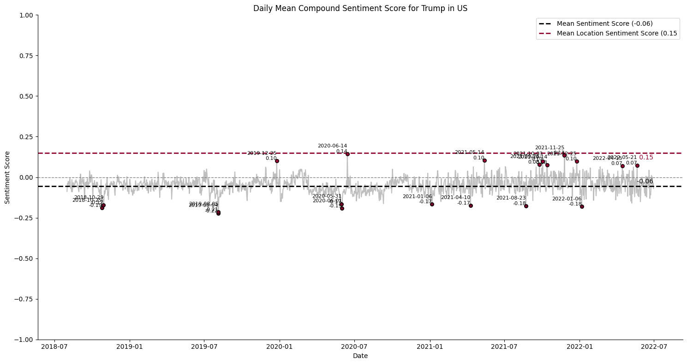
Top Points:
Date: 2020-06-14, Sentiment: 0.14
Date: 2021-11-25, Sentiment: 0.13
Date: 2021-05-14, Sentiment: 0.10
Date: 2019-12-25, Sentiment: 0.10
Date: 2021-10-03, Sentiment: 0.10
Date: 2021-12-25, Sentiment: 0.10
Date: 2021-09-25, Sentiment: 0.08
Date: 2021-10-14, Sentiment: 0.08
Date: 2022-05-21, Sentiment: 0.07
Date: 2022-04-15, Sentiment: 0.07
Bottom Points:
Date: 2019-08-04, Sentiment: -0.22
Date: 2019-08-05, Sentiment: -0.21
Date: 2020-06-01, Sentiment: -0.19
Date: 2018-10-25, Sentiment: -0.19
Date: 2022-01-06, Sentiment: -0.18
Date: 2021-08-23, Sentiment: -0.18
Date: 2021-04-10, Sentiment: -0.17
Date: 2018-10-29, Sentiment: -0.17
Date: 2021-01-06, Sentiment: -0.17
Date: 2020-05-31, Sentiment: -0.17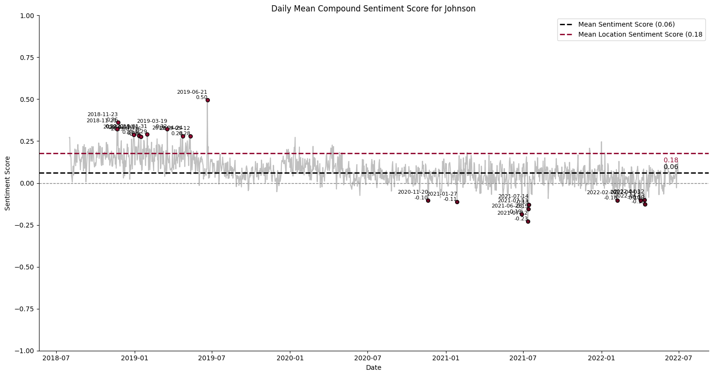
Top Points:
Date: 2019-06-21, Sentiment: 0.50
Date: 2018-11-23, Sentiment: 0.36
Date: 2018-11-21, Sentiment: 0.32
Date: 2019-03-19, Sentiment: 0.32
Date: 2019-01-31, Sentiment: 0.29
Date: 2018-12-30, Sentiment: 0.29
Date: 2019-01-11, Sentiment: 0.28
Date: 2019-04-24, Sentiment: 0.28
Date: 2019-05-12, Sentiment: 0.28
Date: 2019-01-16, Sentiment: 0.28
Bottom Points:
Date: 2021-07-12, Sentiment: -0.23
Date: 2021-06-28, Sentiment: -0.19
Date: 2021-07-13, Sentiment: -0.15
Date: 2021-07-14, Sentiment: -0.13
Date: 2022-04-13, Sentiment: -0.13
Date: 2021-01-27, Sentiment: -0.11
Date: 2022-02-07, Sentiment: -0.10
Date: 2022-04-03, Sentiment: -0.10
Date: 2020-11-20, Sentiment: -0.10
Date: 2022-04-12, Sentiment: -0.10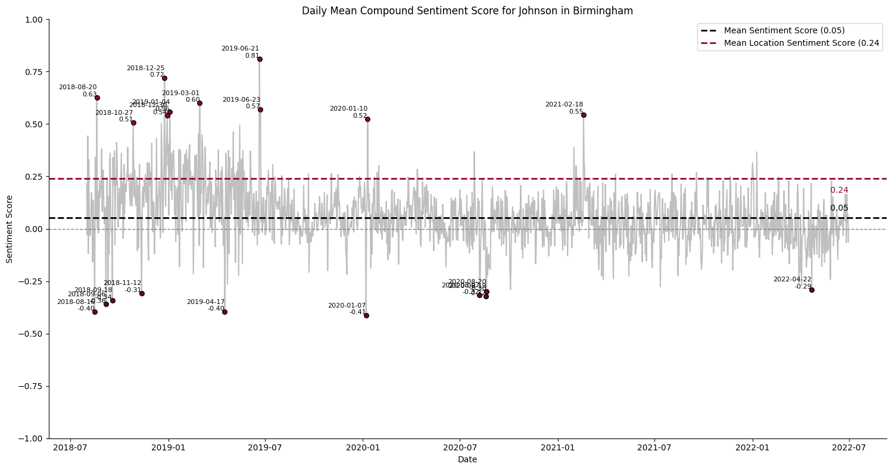
Top Points:
Date: 2019-06-21, Sentiment: 0.81
Date: 2018-12-25, Sentiment: 0.72
Date: 2018-08-20, Sentiment: 0.63
Date: 2019-03-01, Sentiment: 0.60
Date: 2019-06-23, Sentiment: 0.57
Date: 2019-01-04, Sentiment: 0.56
Date: 2021-02-18, Sentiment: 0.55
Date: 2018-12-30, Sentiment: 0.54
Date: 2020-01-10, Sentiment: 0.52
Date: 2018-10-27, Sentiment: 0.51
Bottom Points:
Date: 2020-01-07, Sentiment: -0.41
Date: 2019-04-17, Sentiment: -0.40
Date: 2018-08-16, Sentiment: -0.40
Date: 2018-09-06, Sentiment: -0.36
Date: 2018-09-18, Sentiment: -0.34
Date: 2020-08-19, Sentiment: -0.32
Date: 2020-08-07, Sentiment: -0.32
Date: 2018-11-12, Sentiment: -0.31
Date: 2020-08-20, Sentiment: -0.30
Date: 2022-04-22, Sentiment: -0.29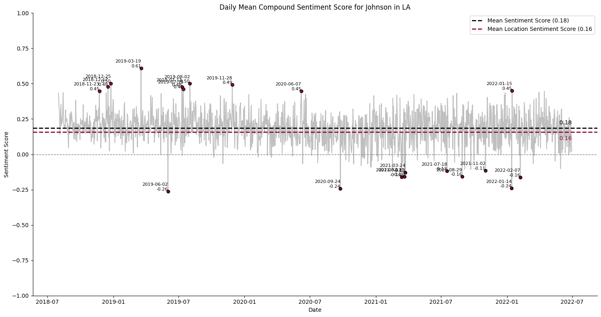
Top Points:
Date: 2019-03-19, Sentiment: 0.61
Date: 2018-12-25, Sentiment: 0.50
Date: 2019-08-02, Sentiment: 0.50
Date: 2019-11-28, Sentiment: 0.49
Date: 2018-12-17, Sentiment: 0.48
Date: 2019-07-11, Sentiment: 0.48
Date: 2019-07-15, Sentiment: 0.46
Date: 2022-01-15, Sentiment: 0.45
Date: 2018-11-23, Sentiment: 0.45
Date: 2020-06-07, Sentiment: 0.45
Bottom Points:
Date: 2019-06-02, Sentiment: -0.26
Date: 2020-09-24, Sentiment: -0.24
Date: 2022-01-14, Sentiment: -0.24
Date: 2022-02-07, Sentiment: -0.16
Date: 2021-03-13, Sentiment: -0.16
Date: 2021-08-29, Sentiment: -0.16
Date: 2021-03-21, Sentiment: -0.16
Date: 2021-03-24, Sentiment: -0.13
Date: 2021-07-18, Sentiment: -0.12
Date: 2021-11-02, Sentiment: -0.11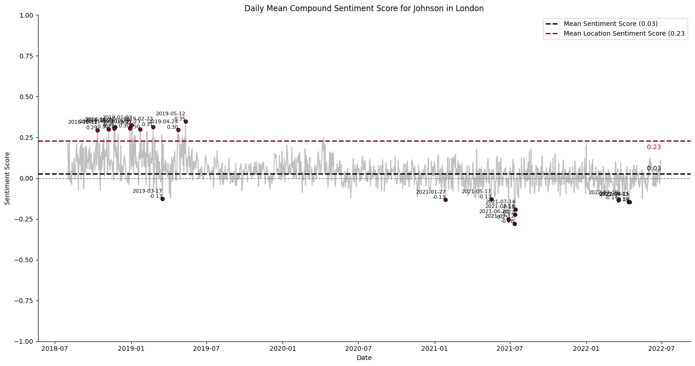
Top Points:
Date: 2019-05-12, Sentiment: 0.35
Date: 2019-01-03, Sentiment: 0.32
Date: 2019-02-23, Sentiment: 0.31
Date: 2018-11-23, Sentiment: 0.31
Date: 2018-11-21, Sentiment: 0.31
Date: 2018-12-29, Sentiment: 0.30
Date: 2019-01-23, Sentiment: 0.30
Date: 2018-11-08, Sentiment: 0.30
Date: 2019-04-24, Sentiment: 0.30
Date: 2018-10-12, Sentiment: 0.29
Bottom Points:
Date: 2021-07-12, Sentiment: -0.28
Date: 2021-06-28, Sentiment: -0.25
Date: 2021-07-13, Sentiment: -0.22
Date: 2021-07-14, Sentiment: -0.19
Date: 2022-04-13, Sentiment: -0.15
Date: 2022-04-15, Sentiment: -0.14
Date: 2022-03-19, Sentiment: -0.14
Date: 2021-01-27, Sentiment: -0.13
Date: 2021-05-17, Sentiment: -0.13
Date: 2019-03-17, Sentiment: -0.13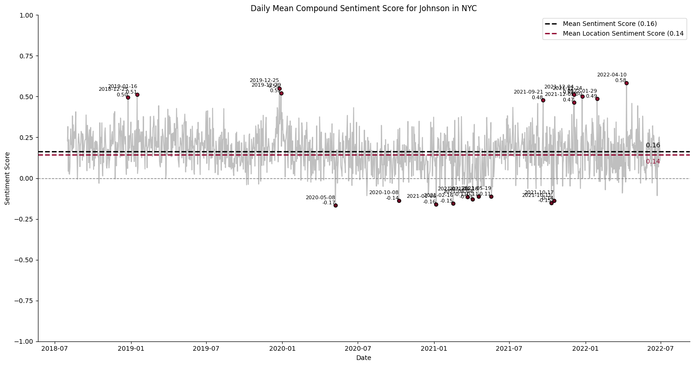
Top Points:
Date: 2022-04-10, Sentiment: 0.58
Date: 2019-12-25, Sentiment: 0.55
Date: 2019-12-29, Sentiment: 0.52
Date: 2019-01-16, Sentiment: 0.51
Date: 2021-12-04, Sentiment: 0.51
Date: 2021-12-24, Sentiment: 0.50
Date: 2018-12-25, Sentiment: 0.50
Date: 2022-01-29, Sentiment: 0.49
Date: 2021-09-21, Sentiment: 0.48
Date: 2021-12-05, Sentiment: 0.47
Bottom Points:
Date: 2020-05-08, Sentiment: -0.17
Date: 2021-01-06, Sentiment: -0.16
Date: 2021-02-16, Sentiment: -0.15
Date: 2021-10-11, Sentiment: -0.15
Date: 2021-10-17, Sentiment: -0.14
Date: 2020-10-08, Sentiment: -0.14
Date: 2021-04-04, Sentiment: -0.13
Date: 2021-03-22, Sentiment: -0.11
Date: 2021-04-18, Sentiment: -0.11
Date: 2021-05-19, Sentiment: -0.11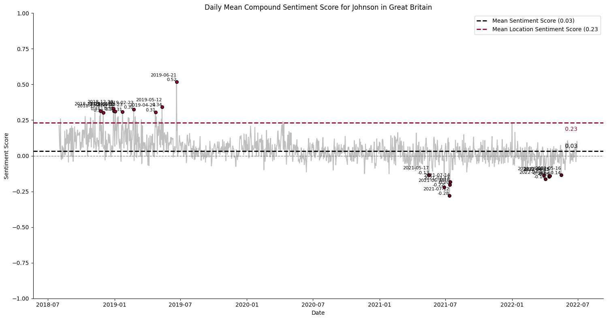
Top Points:
Date: 2019-06-21, Sentiment: 0.52
Date: 2019-05-12, Sentiment: 0.34
Date: 2018-12-29, Sentiment: 0.33
Date: 2019-02-23, Sentiment: 0.32
Date: 2018-12-30, Sentiment: 0.31
Date: 2018-11-23, Sentiment: 0.31
Date: 2019-01-03, Sentiment: 0.31
Date: 2019-01-23, Sentiment: 0.31
Date: 2019-04-24, Sentiment: 0.31
Date: 2018-12-01, Sentiment: 0.30
Bottom Points:
Date: 2021-07-12, Sentiment: -0.28
Date: 2021-06-28, Sentiment: -0.22
Date: 2021-07-13, Sentiment: -0.20
Date: 2021-07-14, Sentiment: -0.18
Date: 2022-04-03, Sentiment: -0.16
Date: 2022-04-13, Sentiment: -0.15
Date: 2022-04-15, Sentiment: -0.14
Date: 2022-03-29, Sentiment: -0.14
Date: 2022-05-16, Sentiment: -0.14
Date: 2021-05-17, Sentiment: -0.13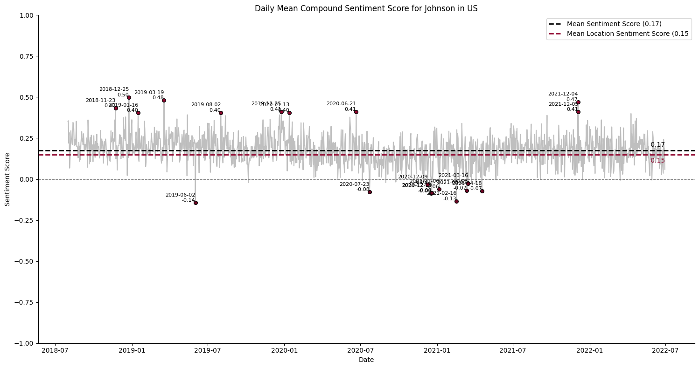
Top Points:
Date: 2018-12-25, Sentiment: 0.50
Date: 2019-03-19, Sentiment: 0.48
Date: 2021-12-04, Sentiment: 0.47
Date: 2018-11-23, Sentiment: 0.43
Date: 2019-12-25, Sentiment: 0.41
Date: 2020-06-21, Sentiment: 0.41
Date: 2021-12-05, Sentiment: 0.41
Date: 2019-08-02, Sentiment: 0.40
Date: 2020-01-13, Sentiment: 0.40
Date: 2019-01-16, Sentiment: 0.40
Bottom Points:
Date: 2019-06-02, Sentiment: -0.14
Date: 2021-02-16, Sentiment: -0.13
Date: 2020-12-18, Sentiment: -0.09
Date: 2020-12-19, Sentiment: -0.08
Date: 2020-07-23, Sentiment: -0.08
Date: 2021-04-18, Sentiment: -0.07
Date: 2021-03-13, Sentiment: -0.07
Date: 2021-01-06, Sentiment: -0.06
Date: 2020-12-09, Sentiment: -0.03
Date: 2021-03-16, Sentiment: -0.03Here a version without the outliers for better visibility.
for president in presidents:
# get sentiment development regardless of location
data = pd.read_pickle(f'{data_path}{president}.pkl')
data, daily_sentiment = add_day_and_get_daily_sentiment(data)
average_compound = get_compound_mean(data)
top_points, bottom_points = plot_sentiment_with_highlights_and_timeframes(daily_sentiment,
title = f'Daily Mean Compound Sentiment Score for {president.capitalize()}',
colors=colors,
average_compound=average_compound,
mean_location=mean_compound.at['All','Total'],
num_top_points=0,
num_bottom_points=0,
save_path=f'visualizations/compound_sentiment/{president}.png')
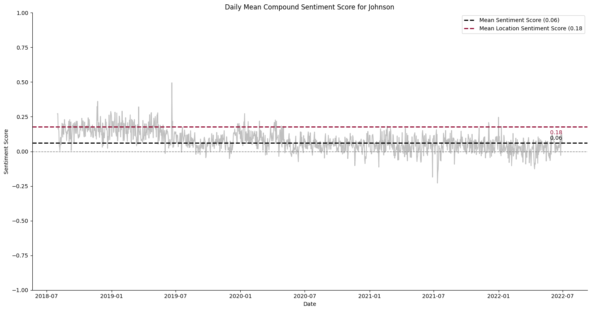
for president in presidents:
# get sentiment development regardless of location
data = pd.read_pickle(f'{data_path}{president}.pkl')
data, daily_sentiment = add_day_and_get_daily_sentiment(data)
average_compound = get_compound_mean(data)
top_points, bottom_points = plot_sentiment_with_highlights_and_timeframes(daily_sentiment,
title = f'Daily Mean Compound Sentiment Score for {president.capitalize()}',
colors=colors,
average_compound=average_compound,
mean_location=mean_compound.at['All','Total'],
num_top_points=0,
num_bottom_points=0,
save_path=f'visualizations/compound_sentiment/{president}.png')
print_outliers(top_points, bottom_points)
# get location-specific sentiment development
for location in (cities + countries):
title = f'Daily Mean Compound Sentiment Score for {president.capitalize()} in {location}'
filepath = f'{data_path}{president}-{location}.pkl'
data = pd.read_pickle(filepath)
data, daily_sentiment = add_day_and_get_daily_sentiment(data)
average_compound = get_compound_mean(data)
plot_sentiment_with_highlights_and_timeframes(daily_sentiment,
title,
colors=colors,
average_compound=average_compound,
mean_location=mean_compound.at['All',location],
num_top_points=0,
num_bottom_points=0,
save_path=f'visualizations/compound_sentiment/{president}-{location}.png')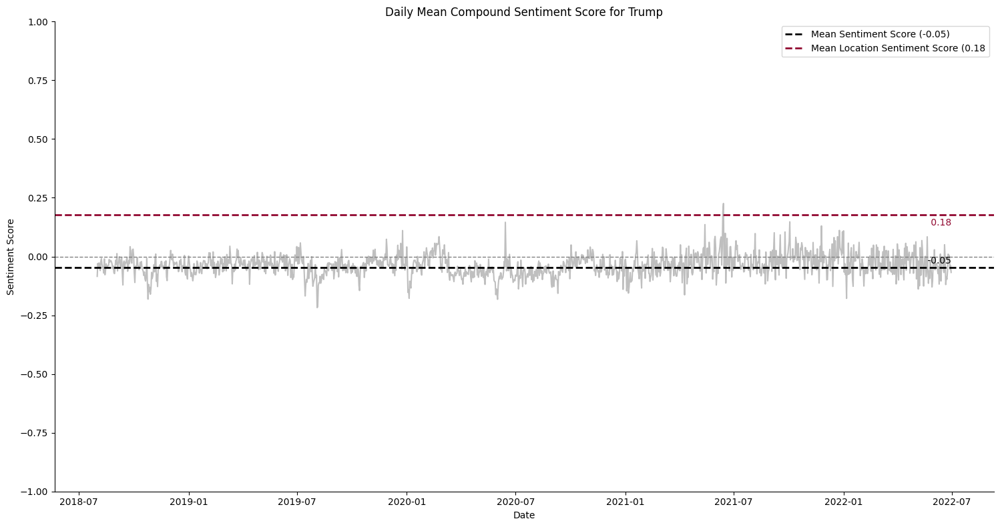
Top Points:
Bottom Points:
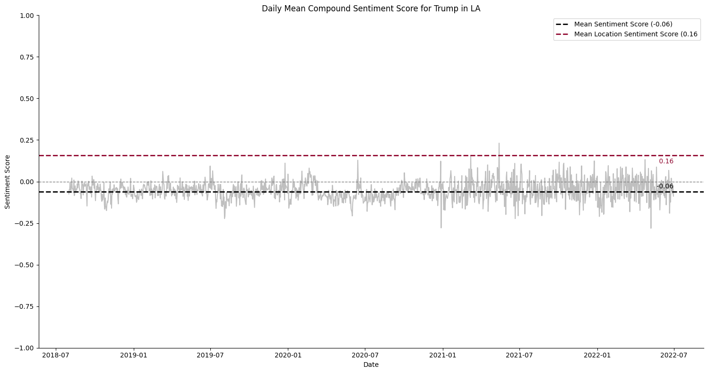
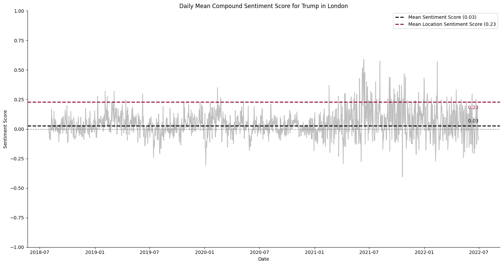
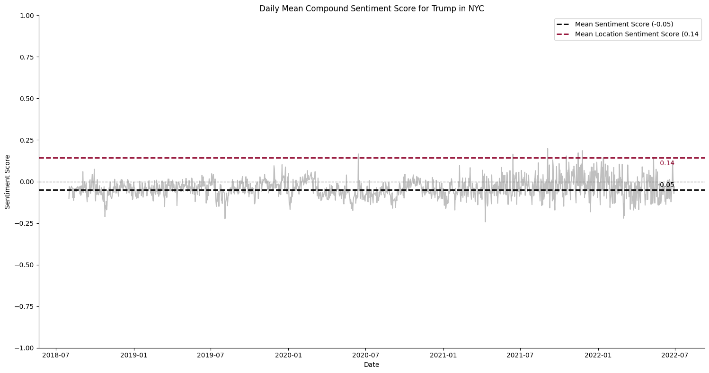

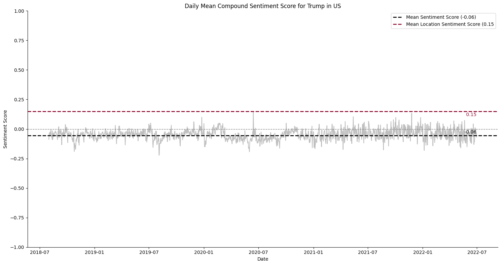
Top Points:
Bottom Points: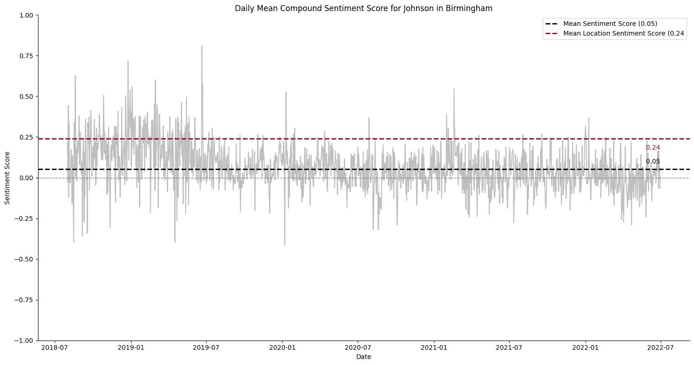
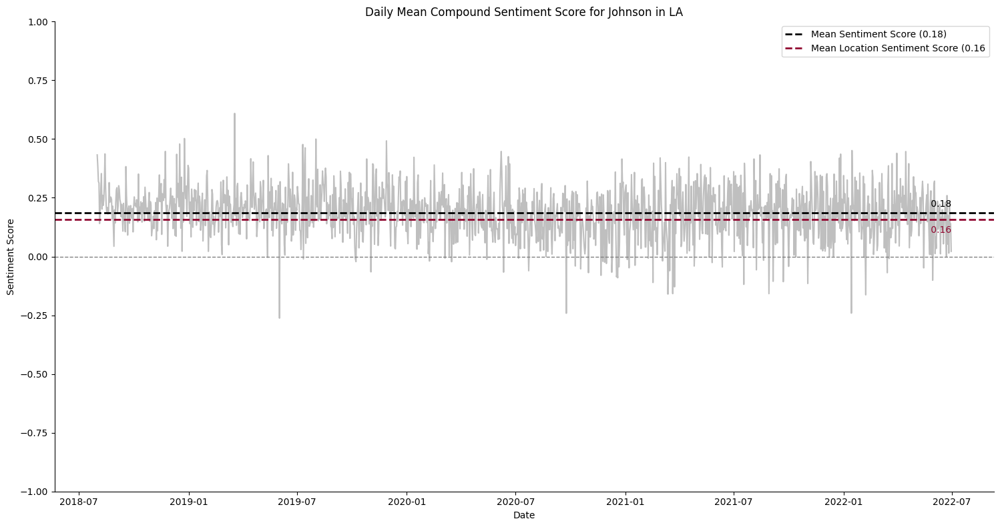
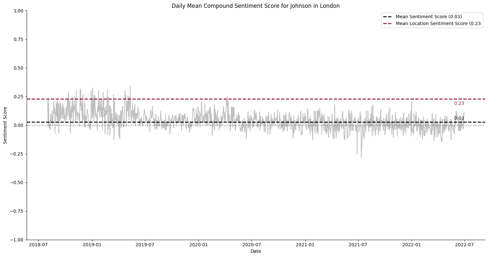
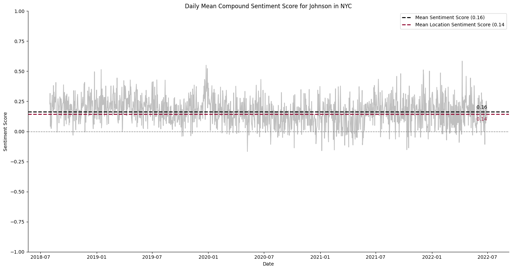
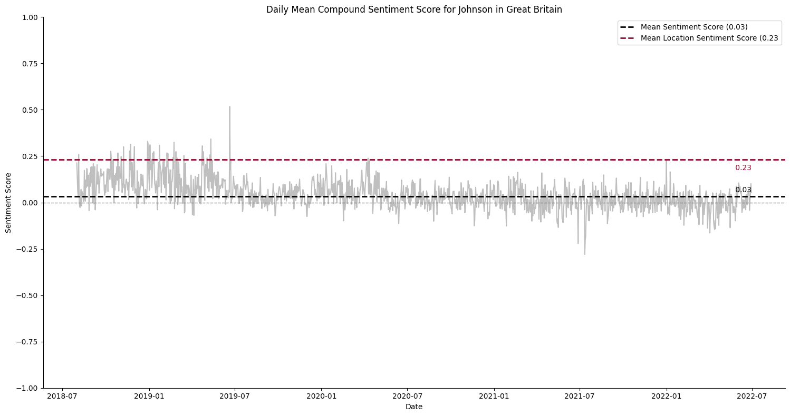
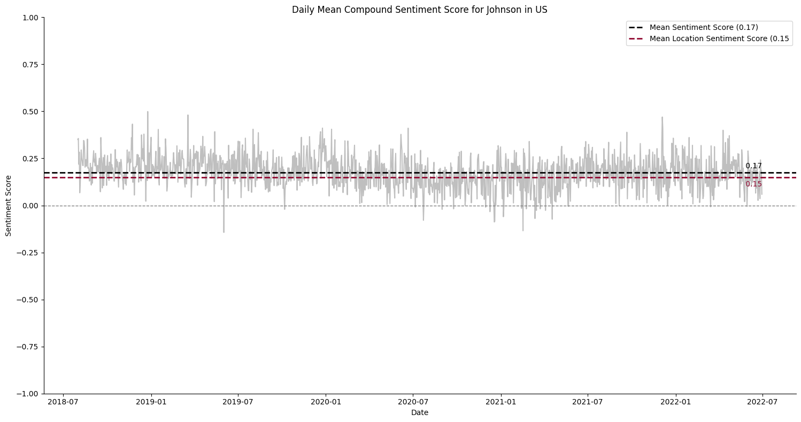
Sentiment Observations and Abnormalities
Donald Trump Overall - variance - little higher variance from January 2021 until July 2022 -> lower post count makes it more susceptible to variance - reaction: almost always the same development in sentiment score -> similar reaction to events. GB reaction is a little stronger; this variance is explained with a smaller dataset. Take higher baseline of GB into consideration - outliers - peaks: - 2021-06-13 - 2021-06-14: mean sentiment score 0.21 - 2021-10-03: sentiment score 0.15 - 2020-06-14: sentiment score 0.15 - christmas and new year should not be evaluated: - 2019-12-25: sentiment score 0.11 - 2022-01-01, Sentiment: 0.11 - 2021-12-30, Sentiment: 0.10 - low points: - 2019-08-04 - 2019-08-05: mean sentiment score mean -0.22 - 2018-10-25: mean sentiment score -0.18 - 2020-06-01: mean sentiment score -0.18 - 2020-01-05: mean sentiment score -0.18
Countries - baseline - Trump has a higher baseline in Britain than in the US and vice versa for Johnson in the US -> presidents are more popular in other countries vs. their own one -> Johnson viewed more favorably in the US due to less direct impact on the lives of the American public -> less critical perspective - variance - Trump has a higher variance in Britain than in the US and vice versa for Johnson in the US than Johnson. Possible explanation: less data about the political leader in the other country - US and overall almost identical for trump - outliers: same in both countries due to similar reactions - only US does not have the peak in 2021-06-14 - 2020-01-05 GB has a strong negative reaction (sentiment score of -0.31), which is not the case in the US
- no reason found:
- The specific events causing the missing peak in the US on June 14, 2021, and the strong negative reaction in Britain on January 5, 2020, are not identified within the available data.
Cities - The overall sentiments in Great Britain and the US also differ, emphasizing how national contexts shape public perception. - NYC and LA very similar, especially the end of 2020 - London and Birmingham are also similar considering the latter’s high variance - outliers - in LA on 2020-12-27, Trump has a mean sentiment score of 0.12, but on the next day it is -0.28.
Boris Johnson Overall - outliers - peaks - all significant peaks are (from 2018-11-21) until 2019-06-21 - the lowest point comprise the following data point: - 2019-06-21: sentiment score 0.50 - other events - 2018-11-23: sentiment score 0.36 - 2018-11-21: sentiment score 0.32 - 2019-03-19: sentiment score 0.32 - 2019-01-31: sentiment score 0.29 - 2018-12-30: sentiment score 0.29 - 2019-01-11: sentiment score 0.28 - 2019-04-24: sentiment score 0.28 - 2019-05-12: sentiment score 0.28 - 2019-01-16: sentiment score 0.28 - low points - all significant low points are since 2020-11-20 (and until 2022-04-13) - the lowest point comprise the following data points: - 2021-07-12 - 2021-07-14: mean sentiment score -0.17 - other events - 2021-06-28: sentiment score -0.19
- no explanation found:
- Further investigation is needed to determine the reason for the sentiment peak on June 14, 2021.
- The exact events influencing the low sentiment scores on October 25, 2018, and June 1, 2020, remain unidentified within the available data.Countries - baseline: - it is unusual that Johnson is on average more popular than the general mean post in the US (with a mean sentiment score of 0.17 versus the 0.15 of the US). This is both the case for LA and NYC.
- outliers
- phases
- positive sentiment
- GB has a positive view on Johnson from 2018-11-23 until 2019-06-21. What events happened here, especially on the days: 2019-06-21, 2019-05-12, 2018-12-29, 2019-02-23, 2018-12-30, 2018-11-23, 2019-01-03, 2019-01-23, 2019-04-24, 2018-12-01?
- negative sentiment
- US has a negative perception on Johnson from 2020-12-09 to 2021-04-18
- GB a negative perception on Johnson from 2021-05-17 - 2021-07-14 (what happened in that timespan, especially on the days of 2021-07-12, 2021-06-28, 2021-07-13, 2021-07-14, 2021-05-17?)
- GB a negative perception on Johnson from 2022-03-29 - 2022-05-16 (what happened in that timespan, especially on the days of 2022-04-03, 2022-04-13, 2022-04-15, 2022-03-29, 2022-05-16?)
- it is odd that at a similar time, there is peak in GB and a low point in the US:
- In GB there is a strong peak on 2019-06-21 (with a sentiment score of 0.52) and in the US there is a low point on 2019-06-02 (with a mean sentiment score of -0.14). Are these dates correlated? Find possible explanations for it.
- peaks
- In US 2021-12-04 - 2021-12-05 with a mean sentiment score of 0.44
- low points
- near 2021-02 sentiment score of -0.2 in US
what happened at these outliers?Cities - All cities of the same country and are characterized by a similar sentiment baseline and development - Birmingham and London - variance: both have a stronger variance until 2019-07 - Birmingham has a sudden shift of sentiment from 2020-01-10 with a sentiment score of 0.52 to the following day to -0.41 - outliers - peaks - Birmingham has a peak of sentiment on 2021-02-18 with a sentiment score of 0.55 - low point - Only LA has a low point of -0.14 on 2019-06-02 -> responsible for US sentiment there
Comparison of Presidents - variance: surprising that Trump has a relatively small variance. trump controversial political figure could have more fluctuation -> compound sentiment of his followers and the opposing group cancel out because of mean calculation - baseline: Johnson has a slightly higher mean compound sentiment score - Trump: US (-0.06) GB (0.02) - Johnson: US (0.03) GB (0.17) - Presidents significantly below general mean sentiment score (MSS) -> Scrutinous and negative media coverage creating; Controversial policies having a negative impact on people’s lives; Political scandals or legal issues
Comparison of Location Baselines Countries - GB has a higher baseline: GB 0.23 and US 0.15 - US is more negative than GB - reasons - cultural differences in expression: Americans more direct -> easier for algorithm to detect negativity - politics: US political division & intensity of political climate -> more critical view of both domestic and international politicians
Cities - cities in the same country similar: LA (0.16) NYC (0.14) London (0.23) Birmingham (0.24). Considering the public perception on the presidents, especially NYC and LA have a very similar mean sentiments (Mean Compound Sentiment by City.png) - reasons - major urban centers, heavily influenced by national media narratives - nationwide issues or perceptions of these leaders overshadow local concerns -> uniform sentiment across different urban centers - political views do not completely align in BI & LO: Birmingham more rural than London (not a city of over a million inhabitants)
Aggregated Post Count
Method: 1. Data Aggregation: Aggregate the data into daily counts with aggregate_tweet_count() 2.
Data Aggregation
def aggregate_daily_counts(df, date_column='day'):
"""
Aggregate the total count of rows for each day in a dataframe.
Parameters:
df (DataFrame): The original dataframe with a 'day' column.
date_column (str): The name of the column containing the dates. Defaults to 'day'.
Returns:
DataFrame: A new dataframe with columns 'day' and 'tweet_count', representing the count of rows per day.
"""
return df.groupby(date_column).size().reset_index(name='tweet_count')
def aggregate_tweet_count(president):
daily_tweet_counts = pd.DataFrame(columns=['day', 'All'] + countries + cities)
for location in countries + cities:
# load data
filepath = f'{data_path}{president}-{location}.pkl'
data = pd.read_pickle(filepath)
# add day
data, _ = add_day_and_get_daily_sentiment(data)
# aggregate day to get daily post count
aggregated_data = aggregate_daily_counts(data)
daily_tweet_counts[location] = aggregated_data['tweet_count']
daily_tweet_counts['day'] = aggregated_data['day']
daily_tweet_counts.set_index('day')
# calculate 'All'
filepath = f'{data_path}{president}.pkl'
data = pd.read_pickle(filepath)
data, _ = add_day_and_get_daily_sentiment(data)
aggregated_data = aggregate_daily_counts(data)
daily_tweet_counts['All'] = aggregated_data['tweet_count']
return daily_tweet_counts# aggregate daily tweets for both presidents
daily_tweet_counts_trump = aggregate_tweet_count(presidents[0])
daily_tweet_counts_johnson = aggregate_tweet_count(presidents[1])
# save data
daily_tweet_counts_trump.to_pickle(f'{data_path}daily_tweet_counts_trump.pkl')
daily_tweet_counts_johnson.to_pickle(f'{data_path}daily_tweet_counts_johnson.pkl')Save the numer of days for get_mean_tweets_per_day() in ./data_overview.ipynb
import json
from get_mean_count import save_results
number_of_days = {"number_of_days": daily_tweet_counts_trump.shape[0]}
save_results(number_of_days, 'results/number_of_days.json')Results saved to results/number_of_days.jsonInspect data to verify data quality
daily_tweet_counts_trump.head()| day | All | Great Britain | US | Birmingham | LA | London | NYC | |
|---|---|---|---|---|---|---|---|---|
| 0 | 2018-08-01 | 2069 | 191 | 1878 | 15.0 | 969 | 176 | 909 |
| 1 | 2018-08-02 | 1724 | 161 | 1563 | 18.0 | 736 | 143 | 827 |
| 2 | 2018-08-03 | 1400 | 146 | 1254 | 14.0 | 623 | 132 | 631 |
| 3 | 2018-08-04 | 2258 | 188 | 2070 | 18.0 | 1243 | 170 | 827 |
| 4 | 2018-08-05 | 1815 | 197 | 1618 | 27.0 | 807 | 170 | 811 |
daily_tweet_counts_johnson.head()| day | All | Great Britain | US | Birmingham | LA | London | NYC | |
|---|---|---|---|---|---|---|---|---|
| 0 | 2018-08-01 | 154 | 89 | 65 | 24 | 39 | 65 | 26 |
| 1 | 2018-08-02 | 149 | 57 | 92 | 10 | 53 | 47 | 39 |
| 2 | 2018-08-03 | 126 | 46 | 80 | 7 | 51 | 39 | 29 |
| 3 | 2018-08-04 | 125 | 59 | 66 | 12 | 41 | 47 | 25 |
| 4 | 2018-08-05 | 137 | 58 | 79 | 17 | 28 | 41 | 51 |
def plot_daily_tweet_counts(post_counts, title, count_columns, colors=colors, timeframe=None, save_path=None, highlight_top_ten=None):
"""
Plot the daily post counts for multiple series with a modern design, including options for highlights and timeframes. Highlights the top ten post counts for each series.
Parameters:
post_counts (DataFrame): Data containing the daily post counts with columns 'day' and multiple 'tweet_count_X' columns.
title (str): The title of the plot.
count_columns (list): List of column names containing the post counts to be plotted.
colors (list, optional): Colors for the post count lines. If None, default colors will be used.
timeframe (tuple of str/datetime, optional): A timeframe to highlight on the plot.
save_path (str, optional): Path to save the figure.
highlight_top_ten (bool, optional): Whether to highlight the top ten post counts.
"""
plt.figure(figsize=(15, 8))
if colors is None:
colors = sns.color_palette('husl', len(count_columns)) # Generate as many colors as count columns
# Plot each post count linedaily_tweet_counts_trump
for i, count_column in enumerate(count_columns):
sns.lineplot(x='day', y=count_column, data=post_counts, color=colors[i], label=count_column)
if highlight_top_ten:
# Sort the DataFrame by 'tweet_count' column in descending order and take the top ten
top_ten_post_counts = post_counts.sort_values(by=count_column, ascending=False).head(10)
# Highlight the top ten post counts
for _, row in top_ten_post_counts.iterrows():
point_datetime = pd.to_datetime(row['day'])
tweet_count_at_point = row[count_column]
plt.scatter(point_datetime, tweet_count_at_point, color=colors[i], s=50, zorder=5)
# Adjusted text positioning
text_x_position = point_datetime - pd.Timedelta(days=-10) # Adjust as needed for your specific date format and plot
plt.text(text_x_position, tweet_count_at_point, f"{row['day']}\n{tweet_count_at_point}", color='black', ha='left', va='bottom')
# Highlight the timeframe
if timeframe:
plt.axvspan(pd.to_datetime(timeframe[0]), pd.to_datetime(timeframe[1]), color='yellow', alpha=0.3, label='Highlighted Period')
plt.title(title)
plt.xlabel('Date')
plt.ylabel('Post Count')
sns.despine()
plt.legend()
plt.tight_layout()
if save_path:
plt.savefig(save_path, format='png', bbox_inches='tight')
plt.show()for president in presidents:
data = daily_tweet_counts_trump if president == presidents[0] else daily_tweet_counts_johnson
plot_daily_tweet_counts(
post_counts=data,
title=f"Daily Post Counts for {president.capitalize()}",
count_columns=['All'],
save_path=f'visualizations/tweet_count/{president}-tweet_count.png'
)
plot_daily_tweet_counts(
post_counts=data,
title=f"Daily Post Counts for {president.capitalize()} per Country",
count_columns=countries,
save_path=f'visualizations/tweet_count/{president}-countries-tweet_count.png'
)
plot_daily_tweet_counts(
post_counts=data,
title=f"Daily Post Counts for {president.capitalize()} per City",
count_columns=cities,
save_path=f'visualizations/tweet_count/{president}-cities-tweet_count.png'
)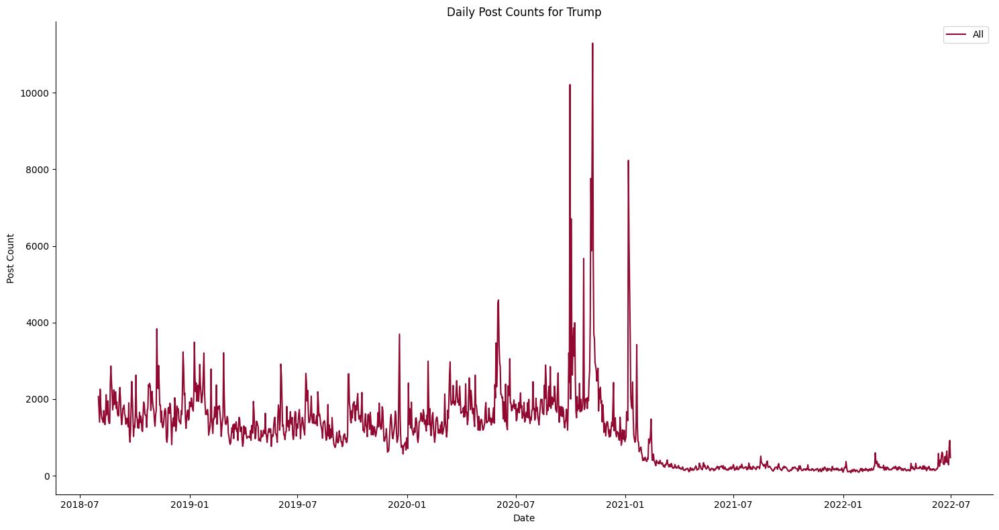
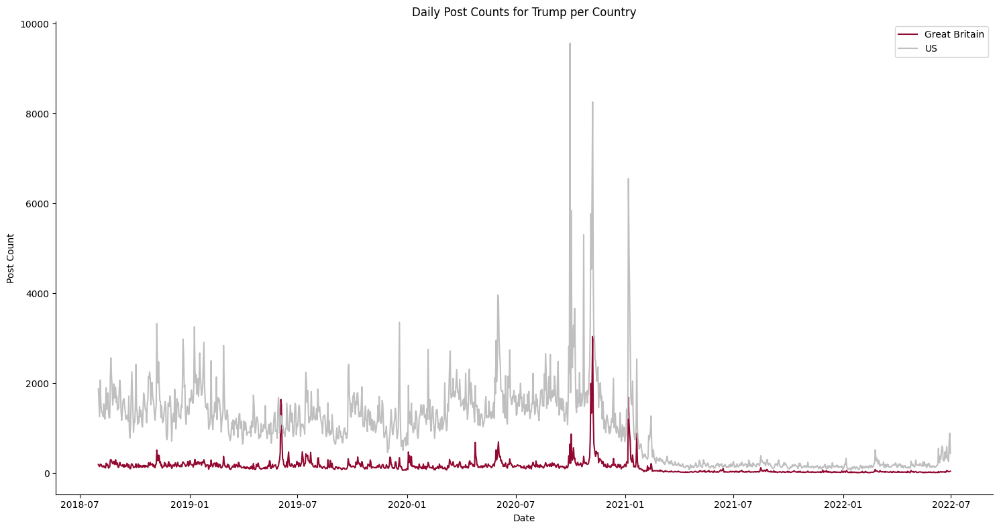
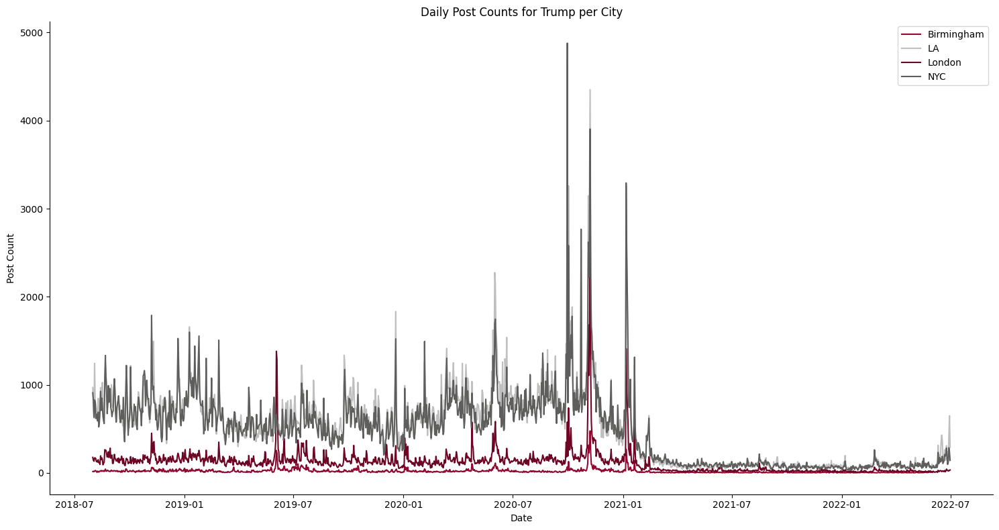
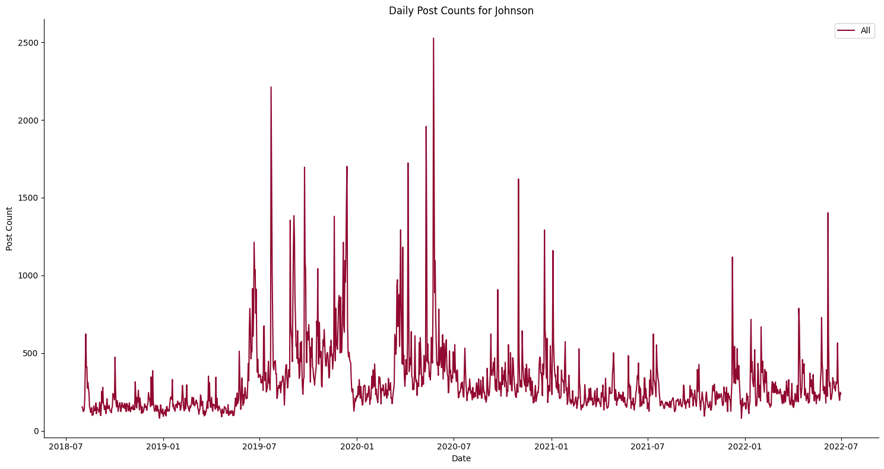
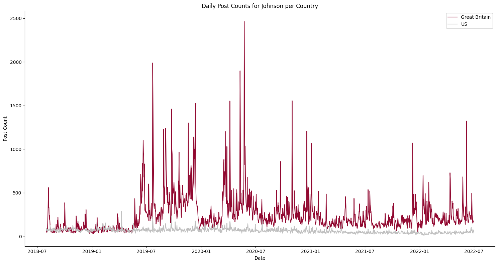
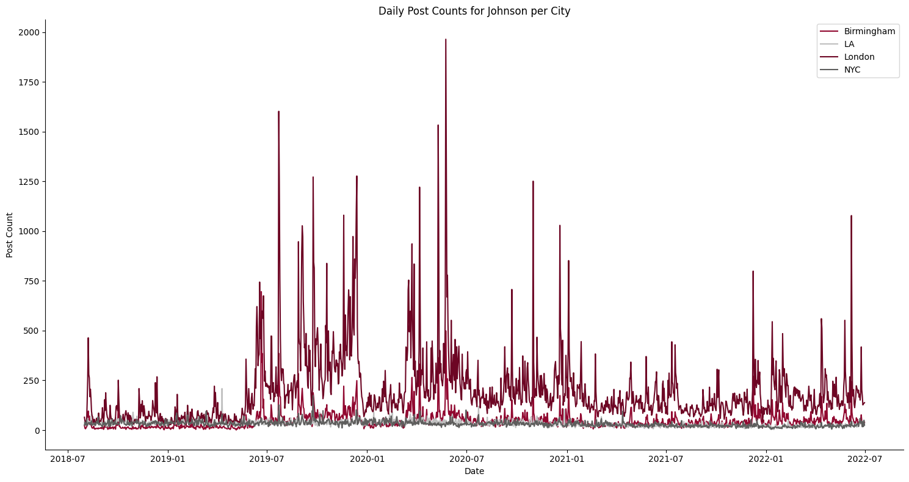
Normalize Daily Post Count
Normalize the daily post count by dividing with the monthly post count
import pandas as pd
monthly_tweet_count = pd.read_pickle('results/monthly_tweet_count.pkl')
monthly_tweet_count| 2018_08 | 2018_09 | 2018_10 | 2018_11 | 2018_12 | 2019_01 | 2019_02 | 2019_03 | 2019_04 | 2019_05 | ... | 2021_09 | 2021_10 | 2021_11 | 2021_12 | 2022_01 | 2022_02 | 2022_03 | 2022_04 | 2022_05 | 2022_06 | |
|---|---|---|---|---|---|---|---|---|---|---|---|---|---|---|---|---|---|---|---|---|---|
| Birmingham | 191433.0 | 191579.0 | 210056.0 | 196021.0 | 191220.0 | 192694.0 | 180492.0 | 176343.0 | 171053.0 | 189581.0 | ... | 117748.0 | 115224.0 | 115670.0 | 120246.0 | 92343.0 | 83309.0 | 101421.0 | 108992.0 | 125573.0 | 123247.0 |
| LA | 1171088.0 | 1154324.0 | 1231818.0 | 1112827.0 | 1081696.0 | 1181323.0 | 1086208.0 | 925107.0 | 965585.0 | 1000215.0 | ... | 619445.0 | 661769.0 | 605353.0 | 587364.0 | 419469.0 | 441942.0 | 551023.0 | 561438.0 | 626102.0 | 627947.0 |
| London | 788735.0 | 823528.0 | 852263.0 | 825937.0 | 788404.0 | 833817.0 | 761305.0 | 745724.0 | 701682.0 | 779578.0 | ... | 468218.0 | 485879.0 | 464786.0 | 467816.0 | 354041.0 | 330898.0 | 399953.0 | 411581.0 | 485100.0 | 473426.0 |
| NYC | 1038041.0 | 1077902.0 | 1118985.0 | 1012020.0 | 984489.0 | 1008954.0 | 911139.0 | 817539.0 | 844749.0 | 891154.0 | ... | 610744.0 | 610459.0 | 582877.0 | 574649.0 | 423957.0 | 404103.0 | 518088.0 | 505101.0 | 561737.0 | 602978.0 |
| Great Britain | 980168.0 | 1015107.0 | 1062319.0 | 1021958.0 | 979624.0 | 1026511.0 | 941797.0 | 922067.0 | 872735.0 | 969159.0 | ... | 585966.0 | 601103.0 | 580456.0 | 588062.0 | 446384.0 | 414207.0 | 501374.0 | 520573.0 | 610673.0 | 596673.0 |
| US | 2209129.0 | 2232226.0 | 2350803.0 | 2124847.0 | 2066185.0 | 2190277.0 | 1997347.0 | 1742646.0 | 1810334.0 | 1891369.0 | ... | 1230189.0 | 1272228.0 | 1188230.0 | 1162013.0 | 843426.0 | 846045.0 | 1069111.0 | 1066539.0 | 1187839.0 | 1230925.0 |
| All | 3189297.0 | 3247333.0 | 3413122.0 | 3146805.0 | 3045809.0 | 3216788.0 | 2939144.0 | 2664713.0 | 2683069.0 | 2860528.0 | ... | 1816155.0 | 1873331.0 | 1768686.0 | 1750075.0 | 1289810.0 | 1260252.0 | 1570485.0 | 1587112.0 | 1798512.0 | 1827598.0 |
7 rows × 47 columns
countries + cities + ['All']['Great Britain', 'US', 'Birmingham', 'LA', 'London', 'NYC', 'All']def normalize_daily_tweet_counts(daily_tweet_counts):
# Convert the 'day' column in daily_tweet_counts to datetime to easily extract year and month
daily_tweet_counts['day'] = pd.to_datetime(daily_tweet_counts['day'])
# For each location, normalize the daily post count
locations = countries + cities + ['All']
for location in locations:
# Apply normalization for each row
daily_tweet_counts[location] = daily_tweet_counts.apply(lambda row: normalize_row(row, location), axis=1)
return daily_tweet_counts
def normalize_row(row, location):
# Extract year and month from the 'day' column
year_month = row['day'].strftime('%Y_%m')
# Lookup the monthly post count for the location
monthly_count = monthly_tweet_count.loc[location, year_month]
# Return the normalized daily count
return row[location] / monthly_count if monthly_count else row[location]# normalize data with normalize_daily_tweet_counts
normalized_daily_tweet_counts_trump = normalize_daily_tweet_counts(daily_tweet_counts_trump)
normalized_daily_tweet_counts_johnson = normalize_daily_tweet_counts(daily_tweet_counts_johnson)
del daily_tweet_counts_trump, daily_tweet_counts_johnson
# save data
normalized_daily_tweet_counts_trump.to_pickle(f'{data_path}normalized_daily_tweet_counts_trump.pkl')
normalized_daily_tweet_counts_johnson.to_pickle(f'{data_path}normalized_daily_tweet_counts_johnson.pkl')normalized_daily_tweet_counts_trump.head()| day | All | Great Britain | US | Birmingham | LA | London | NYC | |
|---|---|---|---|---|---|---|---|---|
| 0 | 2018-08-01 | 0.000649 | 0.000195 | 0.000850 | 0.000078 | 0.000827 | 0.000223 | 0.000876 |
| 1 | 2018-08-02 | 0.000541 | 0.000164 | 0.000708 | 0.000094 | 0.000628 | 0.000181 | 0.000797 |
| 2 | 2018-08-03 | 0.000439 | 0.000149 | 0.000568 | 0.000073 | 0.000532 | 0.000167 | 0.000608 |
| 3 | 2018-08-04 | 0.000708 | 0.000192 | 0.000937 | 0.000094 | 0.001061 | 0.000216 | 0.000797 |
| 4 | 2018-08-05 | 0.000569 | 0.000201 | 0.000732 | 0.000141 | 0.000689 | 0.000216 | 0.000781 |
for president in presidents:
data = normalized_daily_tweet_counts_trump if president == presidents[0] else normalized_daily_tweet_counts_johnson
plot_daily_tweet_counts(
post_counts=data,
title=f"Normalized Daily Post Counts for {president.capitalize()}",
count_columns=['All'],
save_path=f'visualizations/tweet_count/{president}-normalized_tweet_count.png'
)
plot_daily_tweet_counts(
post_counts=data,
title=f"Normalized Daily Post Counts for {president.capitalize()} per Country",
count_columns=countries,
save_path=f'visualizations/tweet_count/{president}-countries-normalized_tweet_count.png'
)
plot_daily_tweet_counts(
post_counts=data,
title=f"Normalized Daily Post Counts for {president.capitalize()} per City",
count_columns=cities,
save_path=f'visualizations/tweet_count/{president}-cities-normalized_tweet_count.png'
)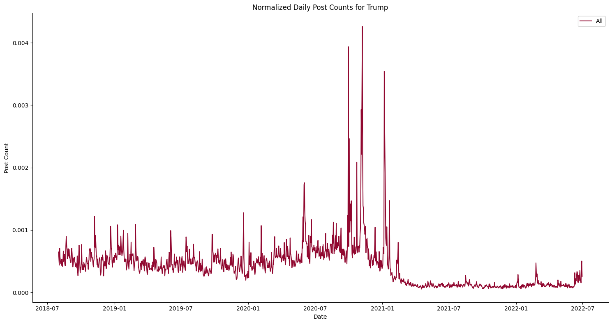
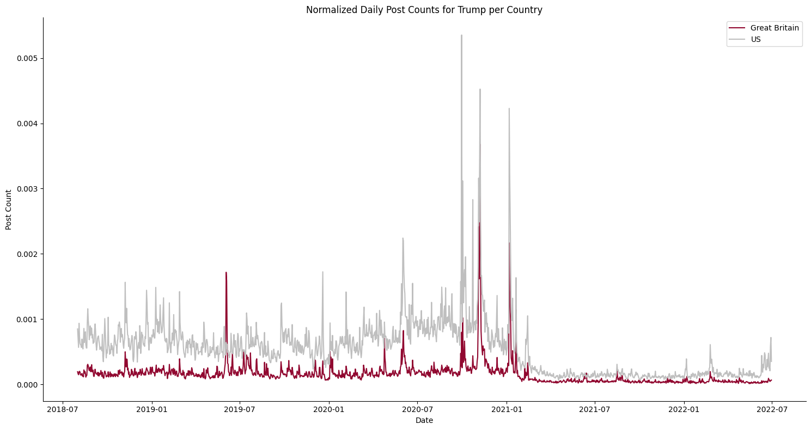
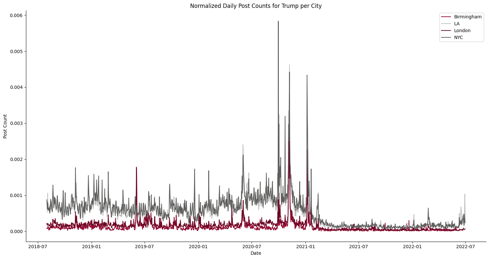
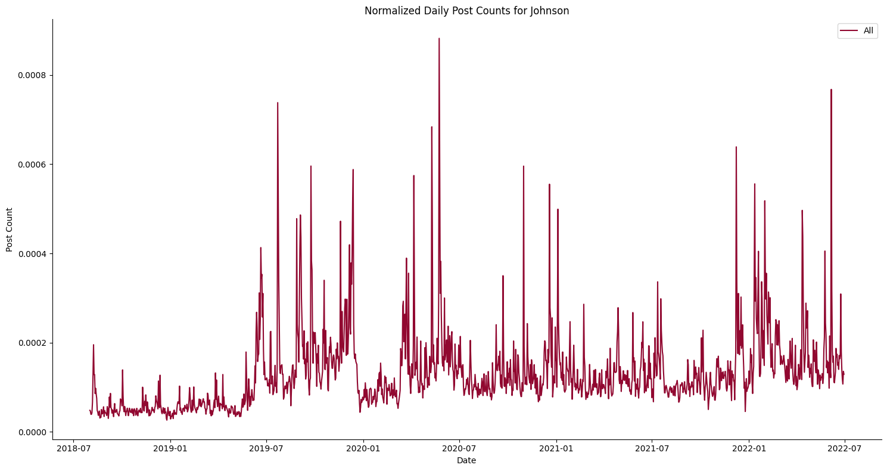
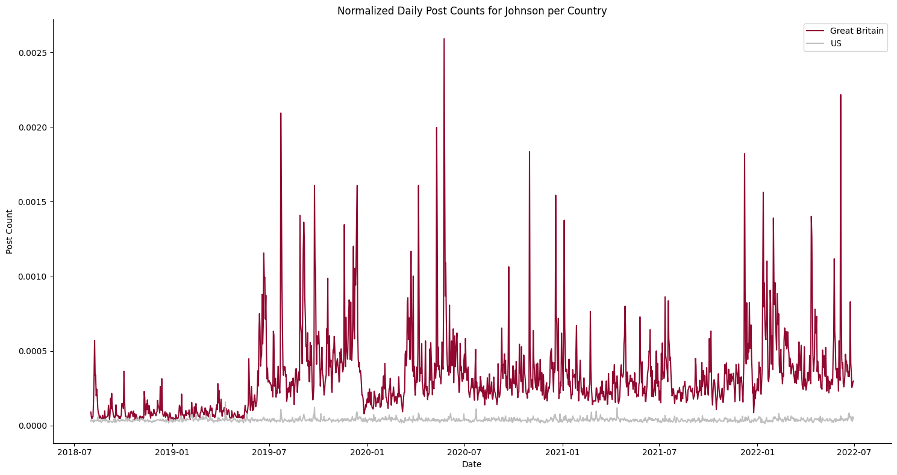
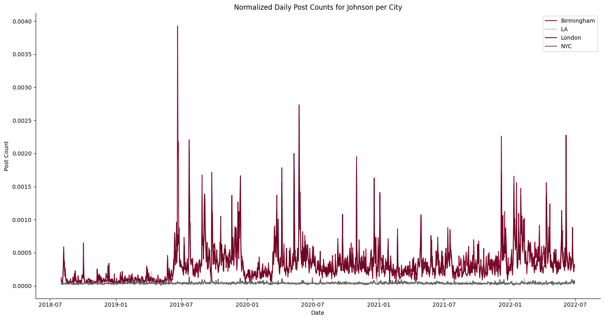
Interpretation Post Count
Absolute Values
def get_top_dates(df, column, nlargest=10):
"""
Get the rows corresponding to the highest 10 values of a specified column in a DataFrame.
Parameters:
df (DataFrame): The DataFrame containing the data.
column (str): The name of the column to find the top 10 values in.
Returns:
DataFrame: A DataFrame containing the rows with the top 10 values of the specified column.
"""
return df.nlargest(nlargest, column)
def get_top_ten_days(data, president):
for location in countries + cities:
print(president.capitalize(), location)
print(get_top_dates(data, location)[['day', location]].to_string(index=False),"\n")# get original post data because it was previously normalized
daily_tweet_counts_trump = pd.read_pickle(f'{data_path}daily_tweet_counts_trump.pkl')
daily_tweet_counts_johnson = pd.read_pickle(f'{data_path}daily_tweet_counts_johnson.pkl')get_top_ten_days(daily_tweet_counts_trump, presidents[0])
get_top_ten_days(daily_tweet_counts_johnson, presidents[1])Trump Great Britain
day Great Britain
2020-11-07 3036
2020-11-06 2000
2020-11-04 1994
2021-01-06 1680
2019-06-03 1636
2019-06-04 1510
2020-11-05 1334
2020-11-08 1334
2021-01-07 1126
2021-01-08 888
Trump US
day US
2020-09-30 9564
2020-11-07 8256
2021-01-06 6551
2020-11-06 6198
2020-10-02 5841
2020-11-04 5767
2020-10-23 5301
2021-01-07 5001
2020-11-05 4538
2020-11-08 4470
Trump Birmingham
day Birmingham
2020-11-07 477.0
2020-11-06 327.0
2020-11-04 314.0
2021-01-06 269.0
2019-06-03 255.0
2020-11-05 227.0
2019-06-04 223.0
2020-11-08 217.0
2021-01-07 172.0
2021-01-20 140.0
Trump LA
day LA
2020-09-30 4685
2020-11-07 4352
2020-11-06 3384
2020-10-02 3260
2021-01-06 3259
2020-11-04 3147
2020-10-23 2535
2021-01-07 2510
2020-11-05 2315
2020-06-01 2274
Trump London
day London
2020-11-07 2559
2020-11-04 1680
2020-11-06 1673
2021-01-06 1411
2019-06-03 1381
2019-06-04 1287
2020-11-08 1117
2020-11-05 1107
2021-01-07 954
2021-01-08 775
Trump NYC
day NYC
2020-09-30 4879
2020-11-07 3904
2021-01-06 3292
2020-11-06 2814
2020-10-23 2766
2020-11-04 2620
2020-10-02 2581
2021-01-07 2491
2020-11-05 2223
2020-11-08 2219
Johnson Great Britain
day Great Britain
2020-05-24 2463
2019-07-23 1988
2020-05-10 1898
2020-05-25 1648
2020-10-31 1556
2020-04-06 1553
2019-12-13 1526
2019-07-24 1491
2019-09-24 1460
2022-06-06 1323
Johnson US
day US
2019-04-10 288
2019-09-24 236
2019-07-23 224
2020-07-23 198
2019-12-12 177
2019-12-13 175
2020-04-06 171
2019-10-06 168
2019-02-14 157
2019-05-20 152
Johnson Birmingham
day Birmingham
2019-06-21 696
2020-05-24 499
2019-07-23 386
2019-06-23 385
2020-05-10 365
2019-06-22 341
2020-04-06 332
2020-10-31 305
2020-05-25 299
2019-08-28 284
Johnson LA
day LA
2019-04-10 209
2020-07-23 120
2020-12-27 104
2019-02-14 101
2019-07-23 97
2019-02-07 96
2019-02-05 94
2020-02-16 91
2018-10-29 90
2019-10-06 89
Johnson London
day London
2020-05-24 1964
2019-07-23 1602
2020-05-10 1533
2020-05-25 1349
2019-12-13 1277
2019-09-24 1272
2019-07-24 1251
2020-10-31 1251
2020-04-06 1221
2019-12-12 1106
Johnson NYC
day NYC
2019-09-24 174
2019-07-23 127
2019-12-12 102
2020-06-30 101
2019-10-12 98
2019-09-22 97
2019-12-13 97
2020-04-07 96
2019-03-12 95
2019-07-24 95
Non-Normalized Clustered High Post-Frequency Dates
Donald Trump
✅ Overall 1. 2020-11-04 - 2020-11-08 (7761 + 5872 + 8198 + 11292 + 5804) 2. 2020-09-30 - 2020-10-02 (10210 + 6708) 3. 2021-01-06 - 2021-01-07 (8231 + 6127) 4. 2020-10-23 (5673)
✅ GB 1. 2020-11-04 - 2020-11-08 (1994 + 1334 + 2000 + 3036 + 1334) 2. 2019-06-03 - 2019-06-04 (1636 + 1510) 3. 2021-01-06 - 2021-01-07 (1680 + 1126) 4. 2021-01-20 (888)
✅ US 1. 2020-09-30 (9564) 2. 2020-11-04 - 2020-11-08 (5767 + 4538 + 6198 + 8256 + 4470) 3. 2021-01-06 - 2021-01-07 (6551 + 5001) 4. 2010-10-02 (5841) 5. 2020-10-23 (5301)
✅ NYC 1. 2020-09-30 (4879) 2. 2020-11-04 - 2020-11-08 (2620 + 2223 + 2814 + 3904 + 2219) 3. 2021-01-06 - 2021-01-07 (3292 + 2491) 4. 2020-10-23 (2766) 5. 2010-10-02 (2581)
✅ LA 1. 2020-09-30 - 2020-10-02 (4685 + 4685) 2. 2020-11-04 - 2020-11-07 (3147 + 2315 + 3384 + 4352) 3. 2021-01-06 - 2021-01-07 (3259 + 2510) 4. 2020-10-02 (3260) 5. 2020-10-23 (2535) 6. 2020-06-01 (2274)
✅ London 1. 2020-11-04 - 2020-11-08 (1680 + 1107 + 1673 + 2559 + 1117) 2. 2021-01-06 - 2021-01-07 (1411 + 954) 3. 2019-06-03 - 2019-06-04 (1381 + 1287) 4. 2021-01-08 (775) - outlier
✅ Birmingham 1. 2020-11-04 - 2020-11-07 (314 + 227 + 327 + 477) 2. 2021-01-06 - 2021-01-07 (269 + 172) 3. 2019-06-03 - 2019-06-04 (255 + 223) 4. 2020-11-08 (217) 5. 2021-01-20 (140)
Boris Johnson
✅ Overall 1. 2020-05-24 - 2020-05-25 (2526 + 1737) 2. 2019-07-23 - 2019-07-24 (2212 + 1637) 3. 2020-05-10 (1958) 4. 2020-04-06 (1724) 5. 2019-12-12 - 2019-12-13 (1492 + 1701) 6. 2019-09-24 (1646) 7. 2020-10-31 (1620)
✅ GB 1. 2020-05-24 - 2020-05-25 (2463 + 1491) 2. 2019-07-23 - 2019-07-24 (1988 + 1637) 3. 2020-05-10 (1898) The rest is roughly on a similar level: 4. 2020-10-31 (1556) 5. 2020-04-06 (1553) 6. 2019-12-13 (1526) 7. 2019-09-24 (1460) 8. 2022-06-06 (1323)
✅ US: completely different to GB. Different dates etc. 1. 2019-04-10 (288) 2. 2020-04-06 (171) 3. 2019-09-24 (236) 4. 2019-07-23 (224) 5. 2020-07-23 (198) 6. 2019-12-12 - 2019-12-13 (177 + 175) 7. 2019-10-06 (168) 8. 2019-02-14 (157) 9. 2019-05-20 (152)
✅ LA 1. 2019-04-10 (209) 2. 2020-07-23 (120) 3. 2020-12-27 (104) 4. 2019-02-14 (101) 5. 2019-07-23 (97) 6. 2019-02-05 + 2019-02-07 (94 + 96) 7. 2020-02-16 (91) 8. 2018-10-29 (90) 9. 2019-10-06 (89)
✅ Johnson NYC: US cities differ completely 1. 2019-09-22 + 2019-09-24 (97 + 174) 2. 2019-07-23 - 2019-07-24 (95 + 127) 3. 2019-12-12 - 2019-12-13 (102 + 97) 4. 2020-06-30 (101) 5. 2019-10-12 (98) 6. 2020-04-07 (96) 7. 2019-03-12 (95)
✅ London 1. 2020-05-24 - 2020-05-25 (1964 + 1349) 2. 2019-07-23 (1602) 3. 2020-05-10 (1533) 4. 2019-12-13 (1277) 5. 2019-09-24 (1272) 6. 2019-07-24 (1251) 7. 2020-10-31 (1251) 8. 2020-04-06 (1221) 9. 2019-12-12 (1106)
✅ Birmingham: 2019-06-21 - 2019-06-23 relevant in BI, but not in LO; 2019-09-24, 2019-07-24, 2020-04-06, 2019-12-12 in LO, but not BI 1. 2019-06-21 - 2019-06-23 (696 + 341 + 385) 2. 2020-05-24 - 2020-05-25 (499 + 299) 3. 2019-07-23 (386) 4. 2020-05-10 (365) 5. 2020-04-06 (332) 6. 2020-10-31 (305) 7. 2019-08-28 (284)
Post Count Observations and Abnormalities
General - After one or at maximum 4 days (usually 1-2), Twitter does not talk about scandals as much \(\rightarrow\) News seem to become irrelevant after a couple of days and then irrelevant after that - Birmingham has a higher variance (calc values or show bar graphs) than other cities -> maybe because of smaller dataset
Donald Trump
Overall (trump-normalized_tweet_count.png) - peaks - 3 considerate peaks at the end of the presidency (20 January 2017 – 20 January 2021) (TODO: check exact numbers) 1. 2020-11-04 - 2020-11-08 (7761 + 5872 + 8198 + 11292 + 5804) 2. 2020-09-30 - 2020-10-02 (10210 + 6708) 3. 2021-01-06 - 2021-01-07 (8231 + 6127) - less significant peaks (not in thesis) 4. 2020-10-23 (5673) 5. optional TODO: check more than the 10 most significant days
Countries (trump-countries-normalized_tweet_count.png) - US has a slightly higher baseline compared to GB (maybe because it is their president -> TODO: CALC overall MEAN) - mostly the same outliers (= reaction to events), e. g. 2021-01-06 - 2021-01-07 - sometimes different intensity of reaction: - GB strong reaction 2019-06-03 - 2019-06-04 (and slightly less extreme in 2019-12), but no noticable difference in the the post count from the US. Same in 2022-07, but maybe because higher variance in GB because of smaller dataset - US stronger reaction (more posts) from 2020-11-04 - 2020-11-08 (attention: this is the day which has the highest non-normalized post count in GB, but not in US. Nevertheless, this is an observation in the normalized data)
Cities (trump-cities-normalized_tweet_count.png) - primarily Birmingham is responsible for the GB peak in 2019-06-03 - 2019-06-04 and 2020-11-04 - 2020-11-08 - London is primarily responsible for the GB peak in 2021-01-06 - 2021-01-07 - very similar baseline of all cities (TODO: clip visualization at 7.5e-09 and check if i still think the same because the Birmingham peak could make the difference seem small) - NYC and LA are very similar; Birmingham has a slightly higher baseline than London (TODO: CALC MEAN BASELINE)
Boris Johnson
Overall (johnson-normalized_tweet_count.png) - more posts from 2019-06 - 2020-01 - many peaks: TODO: check what happened 1. 2020-05-24 - 2020-05-25 (2526 + 1737) 2. 2019-07-23 - 2019-07-24 (2212 + 1637) 3. 2020-05-10 (1958) 4. 2020-04-06 (1724) 5. 2019-12-12 - 2019-12-13 (1492 + 1701) 6. 2019-09-24 (1646) 7. 2020-10-31 (1620) more: check post 1400+ (not in thesis)
Countries (johnson-countries-normalized_tweet_count.png) - US has few posts about Johnson; Only GB has a higher baseline and variance than US; GB is almost exclusively responsible for the overall post count about Johnson - Considering the non-normalized post counts, it is clear that the post count development in the US is completely different to the one in GB. - (not in thesis) TODO: check difference between overall and country because it looks unusual when you compare the non-normalized with the normalized one - Phases - Since 2021-11 until end of data: high variance and higher baseline in GB - 2019-07 - 2020-01 higher baseline (and 2020-04 - 2020-07) -> covid lockdown?
Cities (johnson-cities-normalized_tweet_count.png) - Birmingham significantly higher baseline (same as with president Trump) - LA & NYC are very similar again (in US/larger city -> national media more important) - In non-normalized graph (not in thesis): - US cities differ completely. Maybe normalization was too strong? - 2019-06-21 - 2019-06-23 relevant in BI, but not in LO; 2019-09-24, 2019-07-24, 2020-04-06, 2019-12-12 in LO, but not BI
Normalized Values
get_top_ten_days(normalized_daily_tweet_counts_trump, presidents[0])
get_top_ten_days(normalized_daily_tweet_counts_johnson, presidents[1])Trump Great Britain
day Great Britain
2020-11-07 0.003680
2020-11-06 0.002424
2020-11-04 0.002417
2021-01-06 0.002168
2019-06-03 0.001718
2020-11-05 0.001617
2020-11-08 0.001617
2019-06-04 0.001586
2021-01-07 0.001453
2021-01-08 0.001146
Trump US
day US
2020-09-30 0.005352
2020-11-07 0.004525
2021-01-06 0.004229
2020-11-06 0.003397
2021-01-07 0.003228
2020-11-04 0.003161
2020-10-02 0.003120
2020-10-23 0.002831
2021-01-08 0.002605
2020-11-05 0.002487
Trump Birmingham
day Birmingham
2020-11-07 0.003101
2020-11-06 0.002126
2020-11-04 0.002042
2021-01-06 0.001774
2020-11-05 0.001476
2019-06-03 0.001438
2020-11-08 0.001411
2019-06-04 0.001258
2021-01-07 0.001134
2021-01-20 0.000923
Trump LA
day LA
2020-09-30 0.004928
2020-11-07 0.004623
2021-01-06 0.004125
2020-11-06 0.003595
2020-11-04 0.003343
2020-10-02 0.003241
2021-01-07 0.003177
2021-01-08 0.002553
2020-10-23 0.002520
2020-11-05 0.002459
Trump London
day London
2020-11-07 0.003813
2020-11-04 0.002503
2020-11-06 0.002493
2021-01-06 0.002264
2019-06-03 0.001783
2020-11-08 0.001664
2019-06-04 0.001661
2020-11-05 0.001649
2021-01-07 0.001531
2021-01-08 0.001244
Trump NYC
day NYC
2020-09-30 0.005834
2020-11-07 0.004420
2021-01-06 0.004337
2021-01-07 0.003281
2020-10-23 0.003192
2020-11-06 0.003186
2020-10-02 0.002979
2020-11-04 0.002966
2021-01-08 0.002660
2020-11-05 0.002517
Johnson Great Britain
day Great Britain
2020-05-24 0.002592
2022-06-06 0.002217
2019-07-23 0.002094
2020-05-10 0.001997
2020-10-31 0.001836
2021-12-08 0.001821
2020-05-25 0.001734
2019-09-24 0.001609
2020-04-06 0.001608
2019-12-13 0.001608
Johnson US
day US
2019-04-10 0.000159
2019-09-24 0.000122
2021-04-13 0.000120
2020-07-23 0.000112
2019-07-23 0.000109
2021-03-05 0.000097
2019-12-12 0.000091
2021-02-24 0.000090
2019-12-13 0.000090
2022-06-22 0.000084
Johnson Birmingham
day Birmingham
2019-06-21 0.003925
2020-05-24 0.002736
2021-12-08 0.002262
2019-07-23 0.002206
2019-06-23 0.002171
2020-05-10 0.002001
2022-06-06 0.001988
2020-10-31 0.001954
2019-06-22 0.001923
2020-04-06 0.001784
Johnson LA
day LA
2019-04-10 0.000216
2020-12-27 0.000131
2020-07-23 0.000126
2022-02-10 0.000111
2021-03-05 0.000105
2021-02-24 0.000094
2019-02-14 0.000093
2022-06-21 0.000091
2019-02-07 0.000088
2019-02-05 0.000087
Johnson London
day London
2020-05-24 0.002558
2022-06-06 0.002277
2019-07-23 0.002068
2020-05-10 0.001996
2020-10-31 0.001809
2020-05-25 0.001757
2019-09-24 0.001717
2021-12-08 0.001708
2019-12-13 0.001663
2020-12-19 0.001629
Johnson NYC
day NYC
2019-09-24 0.000195
2021-04-13 0.000155
2019-07-23 0.000138
2020-06-30 0.000123
2019-03-12 0.000116
2019-12-12 0.000116
2019-12-13 0.000110
2019-09-22 0.000108
2020-04-07 0.000106
2019-07-24 0.000103